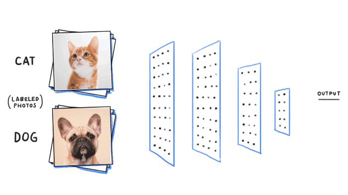

Unidad 9 — Clasificación
Semana 12: Modelo Logit
 https://eduard-martinez.github.io
https://eduard-martinez.github.io
1 ¿Qué es un problema de clasificación?

En Business Analytics, los modelos de clasificación se utilizan cuando la variable de respuesta es categórica (por ejemplo, acepta/no acepta, fraude/no fraude, compra/no compra).
El objetivo es asignar observaciones a categorías con base en sus características observadas.
Ejemplos típicos:
- Determinar si un cliente pagará su crédito o caerá en mora.
- Identificar si una transacción es legítima o fraudulenta.
- Predecir si un estudiante aprobará o no un curso.
- Clasificar correos en “spam” o “no spam”.
1.1 Limitaciones del modelo lineal clásico
La regresión lineal no es apropiada para variables dicotómicas porque:
- Predice valores continuos fuera del rango [0,1].
- Asume una relación lineal entre las variables explicativas y la probabilidad.
- Viola la homocedasticidad y la normalidad de los errores.
Solución: usar un modelo que prediga directamente probabilidades entre 0 y 1: el Modelo Logit.
1.2 El Modelo Logit
El modelo Logit relaciona las variables explicativas con la probabilidad de éxito ( P(Y=1) ) mediante una función no lineal llamada función logística:
[ P(Y=1|X) = ]
Esta transformación garantiza que las probabilidades estén siempre entre 0 y 1.
Interpretación: En lugar de modelar la probabilidad directamente, el Logit modela el logaritmo de las odds (razón de probabilidades):
[ () = _0 + _1 X_1 + + _k X_k ]
Cada coeficiente (_j) indica cómo cambia el log-odds de éxito cuando (X_j) aumenta en una unidad.
1.3 Odds y log-odds: intuición práctica
Odds (razón de probabilidades): [ = ] Ejemplo: si (P=0.8), las odds son 4 a 1.
Log-odds: logaritmo natural de las odds.
El modelo Logit asume que estas log-odds varían linealmente con las variables explicativas.
Nota:
Las odds comparan la probabilidad de éxito frente a la de fracaso.
El logaritmo convierte esta razón en una escala continua, lo que permite aplicar un modelo lineal.
1.4 Interpretación de los coeficientes
Cada parámetro (_j) se interpreta como el cambio en el log-odds de éxito por un aumento unitario en (X_j).
- Si ( _j > 0 ): (X_j) aumenta la probabilidad de éxito.
- Si ( _j < 0 ): (X_j) reduce la probabilidad de éxito.
Para una interpretación más intuitiva se usa el **odds ratio (e^{_j}), que indica cuánto se multiplican las odds** al aumentar (X_j) en una unidad.
Ejemplo interpretativo:
Si (e^{_1} = 1.5), un aumento de una unidad en (X_1) incrementa las probabilidades de éxito en un 50 %.
1.5 Evaluación del modelo
Las métricas más comunes para evaluar modelos de clasificación incluyen:
| Métrica | Descripción |
|---|---|
| Exactitud (Accuracy) | Proporción de predicciones correctas sobre el total. |
| Sensibilidad (Recall) | Capacidad del modelo para identificar correctamente los casos positivos. |
| Especificidad | Capacidad del modelo para identificar correctamente los casos negativos. |
| Precisión (Precision) | Proporción de verdaderos positivos entre todos los positivos predichos. |
| F1-Score | Media armónica entre precisión y sensibilidad. |
| AUC-ROC | Evalúa la capacidad del modelo para distinguir entre clases. |
Matriz de confusión:
Muestra cómo el modelo clasifica los casos reales en comparación con los predichos.
Permite calcular todas las métricas anteriores.
1.6 Aplicaciones en Business Analytics
- Banca y microfinanzas: modelos de credit scoring (probabilidad de incumplimiento).
- Marketing: predicción de cancelaciones o churn.
- Salud: diagnóstico temprano (presencia o ausencia de enfermedad).
- Recursos Humanos: predicción de rotación laboral o desempeño.
Idea clave:
El modelo Logit permite traducir características observables en probabilidades de ocurrencia de un evento,
facilitando la toma de decisiones basada en riesgo.
Resumen:
El modelo Logit es el punto de partida de la analítica predictiva moderna. Permite estimar probabilidades y clasificar observaciones en grupos, combinando interpretabilidad y rigor estadístico.
2 Aplicación en R
Para ilustrar el uso de los modelos de clasificación, trabajaremos con una base sintética que representa a estudiantes inscritos en un curso universitario. Cada registro contiene información sobre el comportamiento académico y el desempeño del estudiante a lo largo del semestre, lo que nos permitirá estimar la probabilidad de aprobar el curso y analizar los factores que más influyen en ese resultado.
En este contexto:
- Cada observación corresponde a un estudiante.
- La variable dependiente es binaria:
aprueba(1 = aprueba, 0 = reprueba).
- Las variables explicativas describen aspectos como el número de horas de estudio, la asistencia, la participación y la afinidad con la estadística.
El objetivo es construir un modelo Logit que nos permita responder preguntas como:
- ¿Qué factores aumentan la probabilidad de aprobar el curso?
- ¿Cómo se interpreta el efecto de cada variable en términos de odds ratio?
- ¿Qué tan bien puede el modelo predecir los resultados académicos?
Este tipo de análisis es una herramienta clave en Business Analytics, ya que permite tomar decisiones basadas en datos —por ejemplo, identificar estudiantes en riesgo académico, diseñar estrategias de acompañamiento o evaluar la efectividad de las metodologías de enseñanza.
💡 Cómo usar este material:
Puedes ejecutar los chunks de R directamente en el navegador gracias a webR, sin necesidad de instalar nada localmente.
2.1 Preparación del entorno
El propósito de este bloque es asegurar un entorno limpio, reproducible y funcional antes de iniciar el análisis.
Primero, eliminamos cualquier objeto previo que pueda interferir con la sesión actual. Luego, instalamos (si es necesario) y cargamos los paquetes requeridos para la manipulación de datos, la visualización y la estimación del modelo Logit.
Con esto, dejamos el entorno preparado para comenzar el análisis aplicado.
Los paquetes tidyverse y broom son parte del ecosistema de análisis de datos en R: • tidyverse permite transformar y visualizar datos de manera eficiente. • broom facilita la conversión de resultados de modelos estadísticos en tablas ordenadas y listas para interpretar.
2.2 Ingesta de datos
En esta sección realizamos la ingesta de datos, es decir, el proceso de generar o cargar la base que utilizaremos para estimar el modelo Logit. Cada registro representa a un estudiante, con variables relacionadas con su esfuerzo, participación y rendimiento a lo largo del semestre.
La estructura de los datos es la siguiente: • horas_estudio: promedio semanal de horas dedicadas al curso. • asistencia: porcentaje de asistencia a clase. • participacion: nivel de participación en clase (0–100). • uso_de_R: nivel de dominio de R (1–5). • trabajos_entregados: cantidad de trabajos entregados (0–5). • afinidad_estadistica: gusto por la estadística (0–100). • aprueba: resultado final (1 = aprueba, 0 = reprueba). • retira: indica si el estudiante se retiró del curso antes de finalizar (1 = sí, 0 = no).
Nuestro objetivo será estimar cómo cada una de estas variables influye en la probabilidad de aprobar el curso.
2.3 Estimación del Modelo Logit
En esta sección estimaremos un modelo Logit para predecir la probabilidad de que un estudiante apruebe el curso, utilizando las variables explicativas incluidas en la base de datos.
El objetivo es cuantificar cómo influyen factores como las horas de estudio, la asistencia, la participación en clase o la afinidad con la estadística sobre la probabilidad de aprobar.
2.3.1 Formulación del modelo
El modelo Logit se puede expresar como:
\(\log\left(\frac{P(\text{aprueba}=1)}{1 - P(\text{aprueba}=1)}\right) =\)
\(f(\text{horas\_estudio},\text{asistencia},\text{participacion},\text{uso\_de\_R},\text{trabajos\_entregados},\text{afinidad\_estadistica})\)
Donde:
- El término del lado izquierdo representa el logaritmo de las odds de aprobar.
- Los coeficientes (_j) indican cómo cambia el log-odds de aprobar ante un cambio unitario en cada variable.
2.3.2 Estimación en R
Usaremos la función glm() (Generalized Linear Model) especificando family = binomial(link = "logit") para estimar el modelo logístico.
Interpretación inicial: Un coeficiente positivo indica que un aumento en la variable incrementa la probabilidad de aprobar, mientras que un coeficiente negativo la reduce. Sin embargo, los valores de los coeficientes están en escala log-odds, por lo que deben transformarse para interpretarse como odds ratios.
2.3.3 Interpretación de coeficientes
Para obtener una interpretación más intuitiva, transformamos los coeficientes mediante la exponenciación:
= e^{_j}
Un odds ratio mayor a 1 indica que un aumento en la variable incrementa la probabilidad de aprobar, mientras que un valor menor a 1 indica que la reduce.
Ejemplo de interpretación: Si el odds ratio de horas_estudio es 1.27, significa que por cada hora adicional de estudio, las probabilidades de aprobar el curso se incrementan en un 27%, manteniendo las demás variables constantes.
2.4 Evaluación del Modelo Logit
Una vez estimado el modelo Logit, necesitamos evaluar su capacidad predictiva:¿qué tan bien logra distinguir entre los estudiantes que aprueban y los que no?
En esta sección construiremos una matriz de confusión, calcularemos métricas de desempeño y visualizaremos la curva ROC (Receiver Operating Characteristic) para medir el poder discriminatorio del modelo.
2.4.1 Predicciones del modelo
Usamos la función predict() para calcular la probabilidad estimada de aprobar (prob_predicha) y clasificamos a cada estudiante según un umbral de 0.5 (es decir, si la probabilidad es mayor a 0.5, se predice que aprueba).
Nota: El valor 0.5 es un umbral arbitrario. Podemos ajustarlo según los objetivos del análisis: • Usar un umbral menor (p. ej. 0.4) si queremos detectar más estudiantes en riesgo (aunque aumenten los falsos positivos). • Usar un umbral mayor (p. ej. 0.6) si preferimos mayor precisión en las predicciones positivas.
2.4.2 Matriz de confusión
La matriz de confusión compara las predicciones del modelo con los valores reales y permite visualizar los aciertos y errores de clasificación.
Interpretación de los resultados:
• Verdaderos positivos (VP): el modelo predice aprobar y el estudiante aprueba.
• Verdaderos negativos (VN): el modelo predice reprobar y el estudiante reprueba.
• Falsos positivos (FP): el modelo predice aprobar pero el estudiante reprueba.
• Falsos negativos (FN): el modelo predice reprobar pero el estudiante aprueba.2.4.3 Métricas de desempeño
A partir de la matriz de confusión calculamos las métricas más comunes para evaluar un modelo de clasificación:
\(\text{Accuracy} = \frac{VP + VN}{VP + VN + FP + FN}\)
\(\text{Sensibilidad (Recall)} = \frac{VP}{VP + FN}\)
\(\text{Especificidad} = \frac{VN}{VN + FP}\)
\(\text{Precisión (Precision)} = \frac{VP}{VP + FP}\)
💡 Interpretación práctica: • Exactitud (Accuracy): proporción de predicciones correctas. • Sensibilidad: qué tan bien el modelo identifica a quienes aprueban. • Especificidad: qué tan bien identifica a quienes reprueban. • Precisión: de los que el modelo predice como aprobados, cuántos realmente aprueban.
2.4.4 Curva ROC y AUC
La curva ROC muestra la relación entre la tasa de verdaderos positivos (sensibilidad) y la tasa de falsos positivos (1 - especificidad) para distintos umbrales de decisión.
El Área Bajo la Curva (AUC) mide el desempeño general del modelo:
• AUC = 0.5 → el modelo no discrimina (como lanzar una moneda).
• AUC = 1 → el modelo clasifica perfectamente.Un valor de AUC entre 0.7 y 0.9 indica un buen poder discriminatorio, mientras que valores superiores a 0.9 suelen considerarse excelentes. Si el AUC está cerca de 0.5, el modelo no está capturando patrones útiles.
2.4.5 Visualización de resultados
Finalmente, podemos representar la relación entre la probabilidad predicha de aprobar y alguna variable explicativa, como las horas de estudio.
Interpretación visual: La curva creciente refleja la naturaleza no lineal del modelo Logit. A medida que aumentan las horas de estudio, la probabilidad de aprobar se incrementa, pero a un ritmo decreciente: los beneficios marginales de estudiar más disminuyen.
3 Actividad en Clase
3.1 Instrucciones:
- Ejecute los chunks de código proporcionados en R (puede hacerlo directamente en el navegador o en RStudio).
- Observe los resultados obtenidos en cada sección.
- Genere un documento en Word (.docx) donde:
- Copie las preguntas que aparecen al final.
- Redacte sus interpretaciones y conclusiones con base en los resultados.
- No copie el código ni las tablas, solo redacte sus respuestas.
- Copie las preguntas que aparecen al final.
- Suba su documento a la plataforma Intu, en la actividad correspondiente a la Semana 13 — Modelo Logit (Predicción de Retiro).
3.1.1 Estimación del modelo Logit
Ejecute el siguiente código para estimar un modelo Logit que prediga la probabilidad de que un estudiante se retire del curso, usando las variables explicativas relacionadas con esfuerzo y participación.
⚠️ No incluya la variable aprueba en el modelo.
3.1.2 Evaluación del Modelo Logit
Una vez estimado el modelo, evalúe su capacidad predictiva. A partir de los resultados, analice qué tan bien el modelo distingue entre los estudiantes que se retiran y los que no.
- Predicciones del modelo: Genere las probabilidades predichas y clasifique a cada estudiante según un umbral de 0.5.
- Genere la matriz de confusión para comparar las predicciones con los valores reales.
- Calcule las métricas básicas del modelo: exactitud, sensibilidad, especificidad y precisión.
- Calcule el Área Bajo la Curva (AUC) para medir el poder discriminatorio del modelo.
- Visualice la relación entre la probabilidad predicha de retiro y una variable explicativa (por ejemplo, las horas de estudio).
3.2 Preguntas para el informe
Interpretación general • ¿Qué variables parecen tener mayor influencia en la probabilidad de retiro según el resumen del modelo (summary(modelo_logit))? • ¿Cuál es el signo del coeficiente asociado a horas_estudio y cómo lo interpretarías? • ¿Qué significa que una variable tenga un p-valor alto (mayor a 0.05)?
Evaluación del desempeño • ¿Qué tan bien clasifica el modelo según las métricas de desempeño calculadas? • Si la exactitud (accuracy) es del 75 %, ¿cómo interpretarías este resultado en un contexto académico? • ¿El modelo tiende a cometer más falsos positivos o falsos negativos? ¿Qué implicaciones tendría eso?
Curva ROC y visualización • ¿Qué valor obtuvo el AUC y qué indica sobre el poder predictivo del modelo? • ¿Cómo se interpreta la relación entre las horas de estudio y la probabilidad de retiro en el gráfico final? • ¿Qué estrategias institucionales podrían derivarse de estos resultados?
💡 Entrega: Suba su documento con las respuestas a la plataforma Intu, en la actividad correspondiente a la Semana 13 — Modelo Logit. Y suba el script con el que realizo el proedimiento. Recuerde que se evaluará la claridad de sus interpretaciones, la consistencia con los resultados del modelo y su capacidad para proponer acciones basadas en los hallazgos.